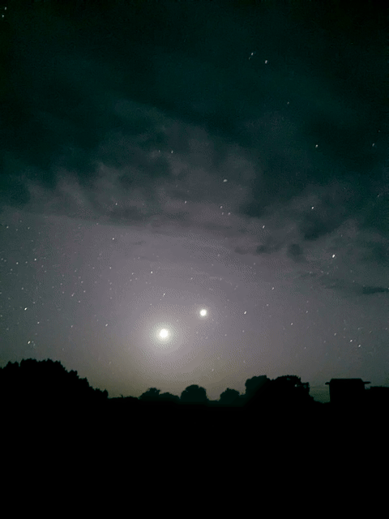
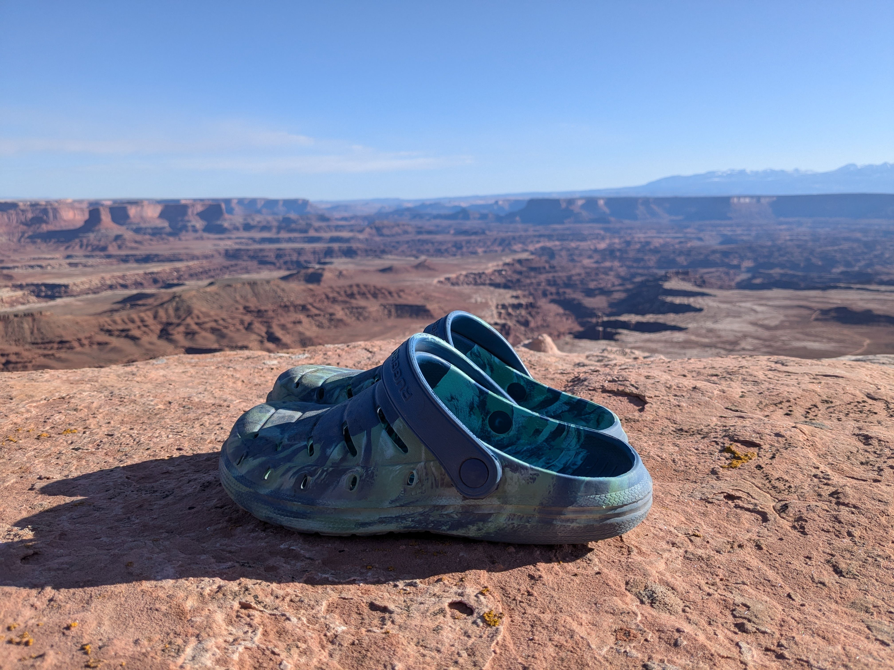
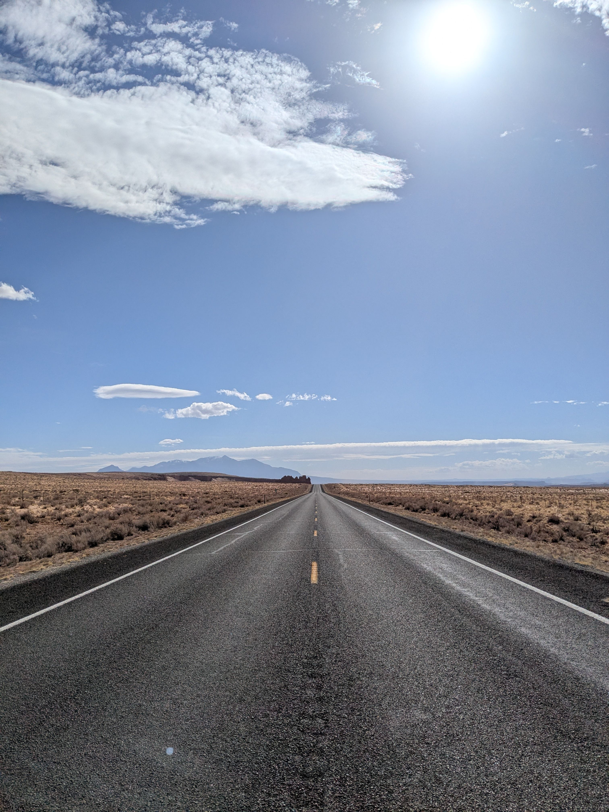
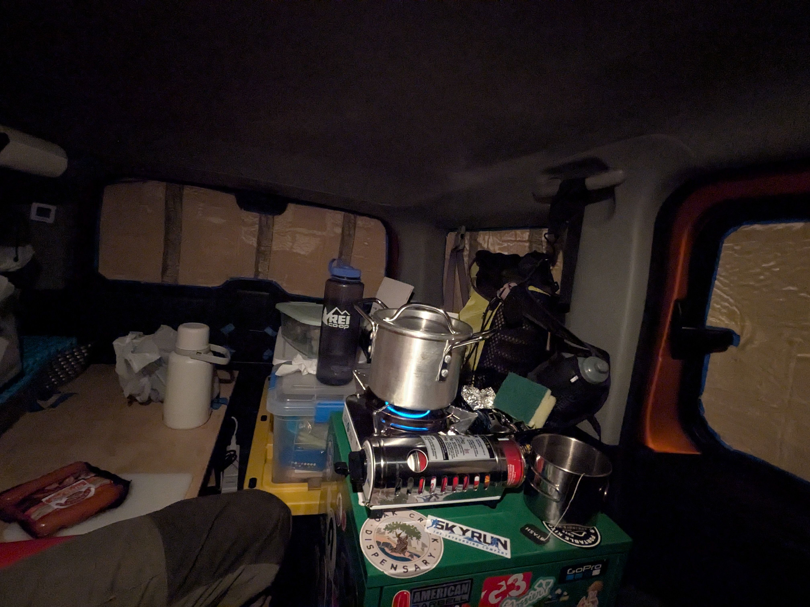
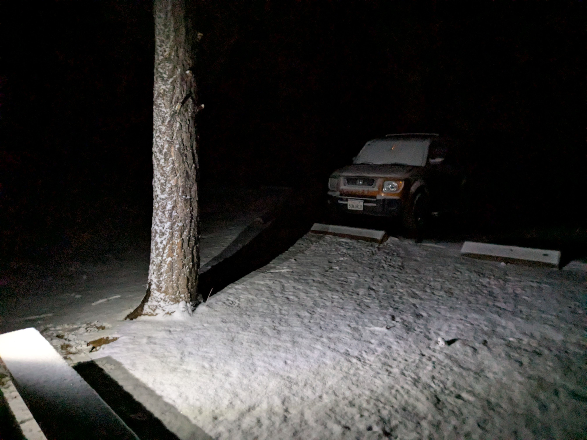
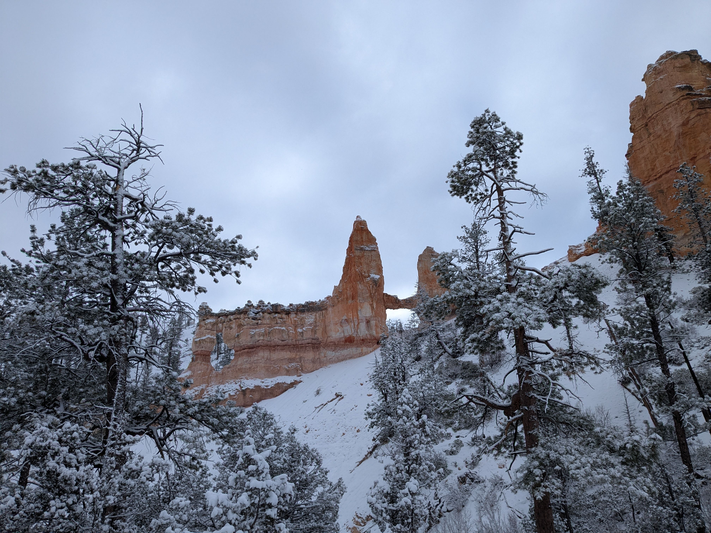
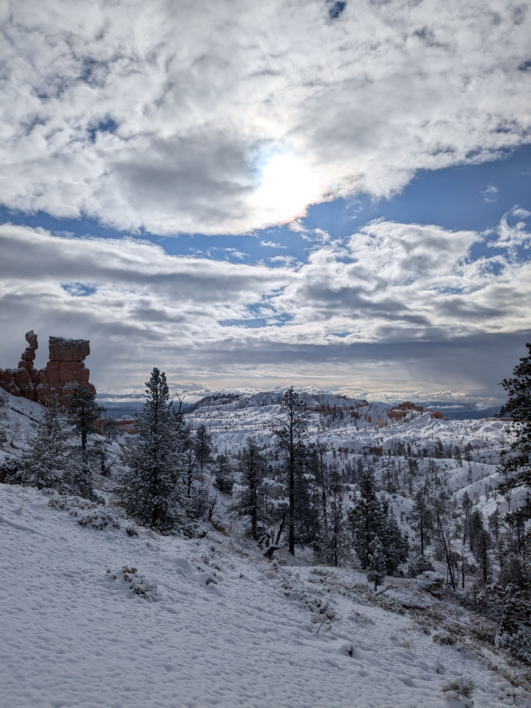
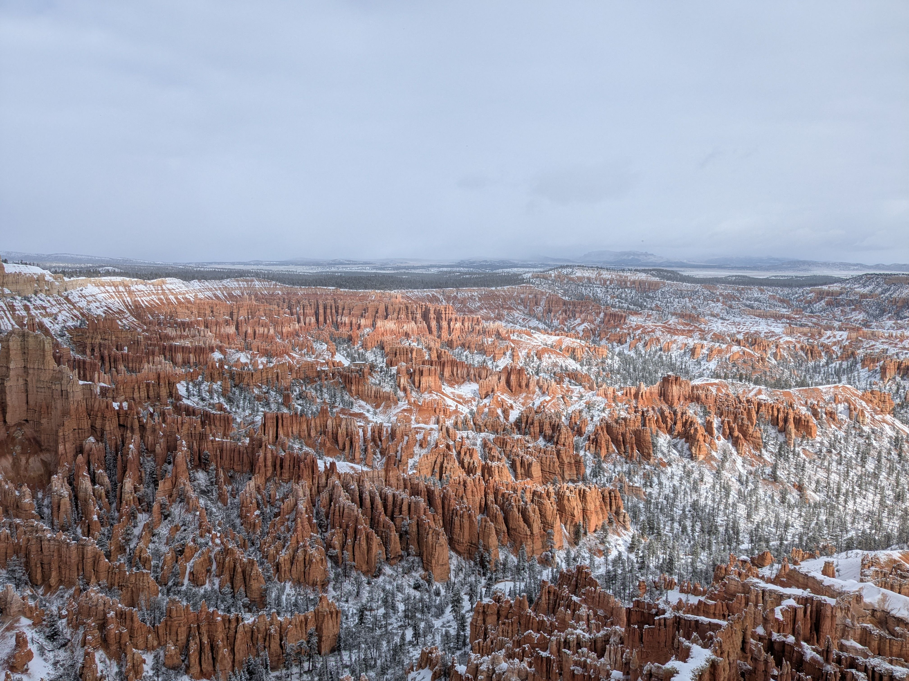
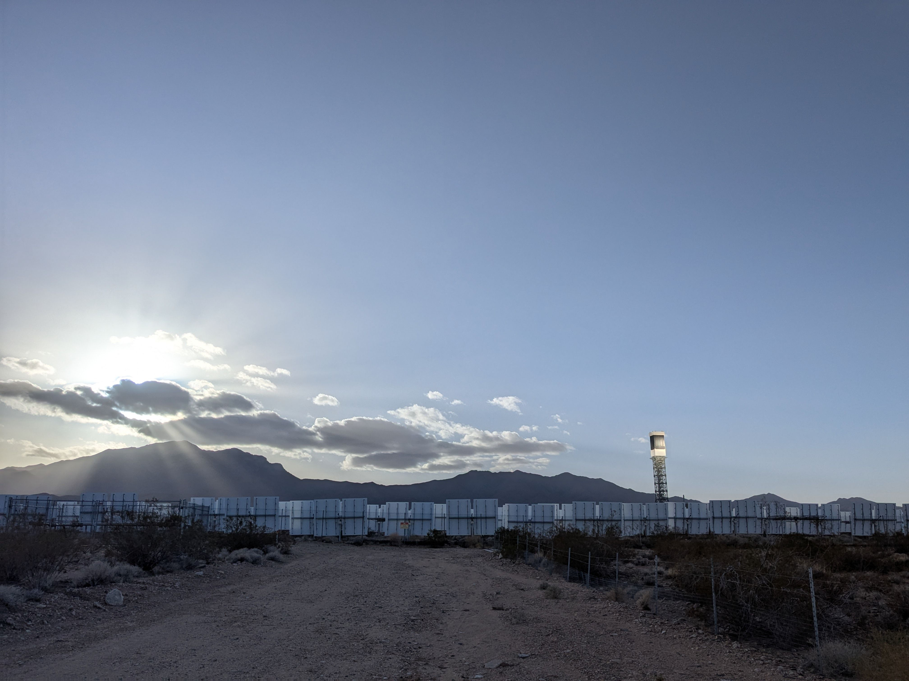

March
[EN]
03/01/2025#
Miles driven: 4762
Wanted to climb a mountain, but the road was still snow covered at higher elevation. Or I've grown lazy and used it as an excuse for not pushing too hard.

Saw a bunch of animal tracks in the snow. These tracks were kinda large. Must've been Bigfoot. The imprint of my shoe is next to it:

At one point, I had to cross through a large grove of Aspen trees. Very pretty. I can only imagine how beautiful this place is with the trees having foliage:

Many people use Aspen trees to carve in very important information that absolutely must be passed down to the next generations. Also, since the tree grows, your carving grows too. Like this "Big Mike/1 90" message is quite much bigger than it was 15 years ago. Probably, Mike has also grown even bigger (no Aspen trees could handle a "Big Josh" though):

Another engraving, 35 years old – almost as old as me 😱:

Fashion is my profession:

I left my car on a dirt road, at a point where snow and ice started to be impassable for my very-capable but-still-a-front-wheel-drive car. Snow and ice, the ground was rock hard. In the morning, that is. 5 or 6 hours later, when coming back, I realized I might have gotten a problem. Everything was going through cycles of thawing/refreezing, and the soil must have been saturated with water for multiple days now:

At this point, I had come to terms with the fact that I might have to spend a night there and leave early in the morning, when the ground is refrozen again. But lucky me, the patch of a road where I left the car was a bit drier (probably because it was in the shade of a car), and I had no problems pulling out onto the main dirt road. It was also somewhat muddy, but I just never lifted my foot off the gas pedal for the next several miles until I got back on a paved road. Exhilarating. But lesson learned.
There is much graffiti in Moab. I spotted one on a wall on my first night there – it was okay, but nothing special. The following day, I saw the same graffiti in a different place, but as if in a lower "resolution". So, today I went back and found the first graffiti to make the comparison. I was totally right. I definitely have an eye for random details. The "high resolution" graffiti:

And its underfunded twin:

Went back to the Canyonlands NP for the night. So. Very. Beautiful:


We have a crescent moon today. First attempt to capture it on camera in a regular mode. The old phone camera produced this somewhat surreal shit, as if the moon is spewing waves of black smoke:

A shot taken a bit later in the night mode. Two moons!

Road trip outcome #4. I think I'm lacking confidence in how I've been living my life up to this point. I've been a bystander, generally going with the flow, kinda reluctant to set important goals and take necessary steps to achieve them. Instead, I would expend a lot of energy and effort on all kinds of things to fill my days and keep me busy: work and earn good money (yet not nearly enough to buy a place in LA, haha), travel to destinations to do "cool" stuff like mountain climbing, skiing, running long distances, rock climbing, obsess with pickleball... and the list continues. It would be a big fat lie – smaller than Josh, though – to say that I didn't enjoy all these things. Of course I did and still do. But there must be an overarching goal, purpose, meaning – you name it – in life, let it fill your days; whatever time and energy is left – then engage in all the good activities. Not the other way around.
My friend Rachelle once recited (from her memory!) the last verse of a poem, "Invictus":
"It matters not how strait the gate,
How charged with punishment the scroll,
I'm the master of my fate,
I'm the captain of my soul."
This poem resurfaced in my head while I was navigating the snow and dirt – am I the captain?
03/02/2025#
Miles driven: 5046
I got those Walmart Crocs rip-off back in Austin. The best traveling footwear. And quite capable hiking shoes as well – the soles are grippy, and the feet feel surprisingly stable. Easy transition between barefoot and in-a-shoe modes too. Not an ad.

Today is another driving day. I think one more national park, Bryce Canyon, and then a straight leap to LA in a day or two.
Utah is a beautiful state. So far it's the most picturesque state I've visited. Texas at the bottom of the list (people are great, though). One very empty highway:

The majority of cars manufactured for North America run on unleaded regular fuel; in California and pretty much anywhere I've bought gas, it has an octane number of 87. Apparently, in places at a higher altitude, where the air is less dense, the unleaded regular fuel has an octane number of 85. In Utah, New Mexico, Colorado, and other states that sit way above sea level. Because of the lower air density and pressure, the lower-octane fuel won't ignite prematurely in a cylinder, therefore it deters pre-ignition or knock. My model of Element has knock sensors, and it can adjust the ignition timing if needed. I'm pretty sure that I pumped more than one tank with 85 octane fuel on this trip – and it seems like the mpg has been slightly worse than usual. I was so used to always having the 87 octane everywhere that it took me quite some time to notice the number 85. I'm such an advanced car owner 🤷♂️
My dad and I made car window blinders – a layer of a reflectix insulator plus a layer made of an old curtain. Mainly for privacy, but it also traps warmth surprisingly well. It was below freezing outside; I cooked a bowl of quinoa and made a cup of tea, and it stayed cozy at 20-ish degrees inside:

Stepped outside to brush my teeth and was sneakily ambushed by the winter:

03/03/2025#
Miles driven: 5445
The winter strikes back and my California-grade windshield fluid froze.


The Bryce Canyon is spectacular. Freshly fallen snow and the rising sun add even more colors and contrasts.

Getting into national parks early, at or before sunrise, is the ultimate hack to beat the crowds and have some solitude on the trails. I didn't know it beforehand, but the Arches NP has a time reservation system when entering the park between 7AM – 4PM. I simply lucked out by arriving there early to catch the sunrise – only three or four people were there with me to meet the sun (and the Delicate Arch is an insanely popular place). It helps a lot that I can pull into the park late in the evening and sleep comfortably in a parking lot.
Some 400 miles later, and I'm back to the dry desert and Las Vegas traffic. It's amazing how much distance a modern car on a highway can cover in a few hours. In Vegas they splurged on pretty cool digital displays for every lane. Here it shows that one of the lanes is closed due to a crash:

The gas prices brought me back to cruel reality. And it's still Nevada, I have yet to see Californian prices. But I don't want to 🙈

Back in Ukraine, I used to play a videogame, Fallout: New Vegas. And there was an in-game location with a solar power plant that used an array of mirrors to focus sunlight on a central tower – it was some kind of a weapon. Anyway, on my first trip to real Las Vegas, when crossing the border from California to Nevada, I spotted several huge towers shining in the sun – I immediately thought of that video game location. And today was the day when I made a detour to this location to see the structure up close – I'm like a crow, can't resist shining objects:

And indeed, it's a solar concentrating thermal power plant; total output is 386 MW. There are three towers surrounded by huge arrays of mirrors (each tower has ~60k mirrors) focusing solar energy on a tower. Then it employs a typical "heat -> water -> steam -> turbine" to generate the electricity. Everything has finally fallen into place.
03/04/2025#
Miles driven: 5660
A final leap to LA. Before leaving the desert, I visited a Mojave Desert Lava Tube. A bit of crawling and I'm inside the tube. Pretty cool:

It was formed approximately 27000 years ago by molten lava flowing across the landscape. The lava originated from volcanic eruptions in the Cima Volcanic Field within the Mojave Desert.
Hello, traffi... I mean, Los Angeles:

42 days and 5660 miles; by far the longest trip I've ever travelled and I even never entered the state of Colorado 🤷♂

What's next?
[UKR]
03/01/2025[UKR]#
КМ проїхав: 7664
Хотів піднятися на гору, але дорога нагорі все ще була вкрита снігом. Чи може я просто обледачів і використав це як відмазку, щоб не напружуватись.
Побачив купу слідів звірів на снігу. Сліди були доволі великі. Мабуть, це був Єті. Відбиток мого черевика поруч для масштабу:
В якийсь момент довелося пройти через великий гай осик. Дуже гарно. Можу лише уявити, яка тут краса, коли дерева вкриті листям:
Багато людей використовують осики, щоб вирізати на них надважливу інформацію, яку конче треба передати наступним поколінням. До того ж, коли дерево росте, твій напис теж росте. Наприклад, це послання "Великий Майк/1 90" зараз значно більше, ніж було 15 років тому. Мабуть, і сам Майк теж виріс ще більшим (хоча жодна осика не витримала б напис "Великий Джош"):
Ще один напис, якому 35 років – майже як мені 😱:
Мода – моя професія:
Я залишив машину на ґрунтовій дорозі там, де сніг і лід стали непрохідними для моєї дуже здібної, але все ж передньопривідної автівки. Сніг та лід, земля була тверда як камінь. Це вранці. Через 5-6 годин, повертаючись назад, я зрозумів, що в мене можуть бути проблеми. Все постійно то тануло, то замерзало, і ґрунт, мабуть, був просякнутий водою вже кілька днів:
На цьому етапі я вже змирився з думкою, що доведеться заночувати тут і виїжджати рано вранці, коли ґрунт знову замерзне. Але мені пощастило – ділянка дороги, де я залишив машину, була трохи сухішою (мабуть, через тінь від автівки), і я без проблем виїхав на головну ґрунтовку. Вона теж була доволі болотиста, але я просто не прибирав ногу з газу кілька кілометрів, поки не виїхав на асфальт. Захоплююче. Але урок засвоєно.
У Моабі багато графіті. Першої ночі я помітив одне на стіні – нормальне, але нічого особливого. Наступного дня я побачив те саме графіті в іншому місці, але ніби в нижчій "роздільній здатності". Тож сьогодні я повернувся і знайшов перше графіті для порівняння. Я був абсолютно правий. У мене точно око на такі дрібниці. Графіті у "високій роздільності":
І його недофінансований близнюк:
Повернувся в національний парк Кеньйонлендс на ніч. Неймовірна. Краса:
Сьогодні у нас молодий місяць. Перша спроба сфотографувати його на камеру в звичайному режимі. Стара камера телефону створила щось сюрреалістичне, ніби місяць випускає хвилі чорного диму:
Знімок, зроблений трохи пізніше в нічному режимі. Два місяці!
Підсумок подорожі #4. Здається, мені не вистачає впевненості в тому, як я жив досі. Я був спостерігачем, загалом плив за течією, якось неохоче ставив важливі цілі і робив необхідні кроки для їх досягнення. Натомість я витрачав купу енергії та зусиль на всілякі речі, щоб заповнити дні і бути зайнятим: працювати і заробляти непогані гроші (хоча й недостатньо, щоб купити житло в ЛА, хаха), подорожувати до різних місць, щоб займатися "крутими" справами типу сходження на гори, катання на лижах, бігу на довгі дистанції, скелелазіння, одержимості піклболом... і список можна продовжувати. Було б великою брехнею – меншою за Джоша, звісно – сказати, що мені це все не подобалося. Звичайно, подобалося і досі подобається. Але в житті має бути всеохоплююча мета, призначення, сенс – як не назви – нехай вона наповнює твої дні; а вже той час та енергію, що залишаться – витрачай на всі ці приємні активності. А не навпаки.
Моя подруга Рашель якось процитувала (по пам'яті!) останню строфу з вірша "Invictus":
"Не важливо, що шлях тісний,
Що кара чекає в кінці,
Я володар долі страшний,
Я капітан душі своєї."
Цей вірш спливав у моїй голові, поки я пробирався крізь сніг і бруд – чи я справді капітан?
03/02/2025[UKR]#
КМ проїхав: 8120
Купив ці підробні кроки з Волмарту ще в Остіні. Найкраще взуття для подорожей. І, як виявилось, цілком годні черевики для хайкінгу – підошва чіпка, і нога на диво стабільна. Легко перемикатися між режимами "босоніж" і "взутий". Не реклама.
Сьогодні знову день за кермом. Думаю, ще один національний парк, Брайс-Каньйон, а потім прямий стрибок до ЛА за день-два.
Юта – прекрасний штат. Наразі це найбільш мальовничий штат з усіх, де я побував. Техас на дні списку (хоча люди там чудові). Ось дуже порожнє шосе:
Більшість автівок, виготовлених для Північної Америки, працюють на неетилованому бензині; в Каліфорнії і практично всюди, де я купував пальне, октанове число – 87. Виявляється, у місцях на більшій висоті, де повітря менш щільне, неетилований бензин має октанове число 85. Це в Юті, Нью-Мексико, Колорадо та інших штатах, що розташовані високо над рівнем моря. Через нижчу щільність повітря та тиск, пальне з нижчим октановим числом не запалюється передчасно в циліндрі, тому запобігає передчасному займанню або детонації. У моїй моделі Element є датчики детонації, і вона може регулювати час запалювання за потреби. Я впевнений, що залив більше одного бака 85-м октаном під час цієї подорожі – і схоже, що витрати пального трохи вищі, ніж зазвичай. Я так звик до того, що всюди 87 октан, що мені знадобився чималий час, щоб помітити цифру 85. Отакий я просунутий автовласник 🤷♂️
Ми з татом зробили шторки на вікна – шар рефлексивного ізолятора плюс шар зі старої фіранки. В основному для приватності, але виявилося, що вони також непогано зберігають тепло. Надворі було нижче нуля; я приготував миску кіноа і заварив чаю, і всередині було затишно близько 20 градусів:
Вийшов почистити зуби і мене підступно атакувала зима:
03/03/2025[UKR]#
КМ проїхав: 8764
Зима знову нагадує про себе – мій омивач для лобового скла каліфорнійського розливу замерз.
Брайс Каньйон просто вражає. Свіжий сніг та вранішнє сонце додають ще більше кольорів і контрастів.
Приїжджати в національні парки рано, на світанку або навіть раніше – це ідеальний лайфхак, щоб уникнути натовпів і насолодитися самотністю на стежках. Я не знав, але в парку Арчес діє система часових резервацій для входу між 7:00 та 16:00. Мені просто пощастило, що я приїхав рано на світанок – зі мною було лише три-чотири людини, щоб зустріти сонце (а Делікат Арч – це шалено популярне місце). Дуже допомагає те, що я можу заїхати в парк пізно ввечері і комфортно переночувати на парковці.
Десь 640 кілометрів потому – і я знову в сухій пустелі та заторах Лас-Вегаса. Дивовижно, скільки відстані може подолати сучасна машина на швидкісній трасі за кілька годин. У Вегасі розщедрилися на доволі круті цифрові табло для кожної смуги. Ось тут показано, що одна зі смуг закрита через аварію:
![[PXL_20250303_233535777.jpg]]
Ціни на бензин повернули мене до жорстокої реальності. І це ще Невада, каліфорнійських цін я ще не бачив. Та й не хочу 🙈
![[PXL_20250304_000611171.jpg]]
Коли я жив в Україні, грав у відеогру Fallout: New Vegas. Там була локація з сонячною електростанцією, яка використовувала масив дзеркал для фокусування сонячного світла на центральній вежі – це була своєрідна зброя. І ось, під час моєї першої подорожі до справжнього Лас-Вегаса, коли перетинав кордон між Каліфорнією та Невадою, я помітив кілька величезних веж, що сяяли на сонці – одразу згадав ту локацію з гри. І сьогодні я нарешті зробив гак до цього місця, щоб побачити споруду зблизька – я як та сорока, не можу встояти перед блискучими штуками:
І справді, це концентрована сонячна теплова електростанція; загальна потужність – 386 МВт. Тут три вежі, оточені величезними масивами дзеркал (біля 60 тисяч дзеркал на кожну вежу), які фокусують сонячну енергію на вежі. Далі все працює за класичною схемою "тепло -> вода -> пара -> турбіна" для генерації електроенергії. Нарешті всі пазли склалися докупи.
03/04/2025[UKR]#
КМ проїхав: 9108
Фінальний стрибок до Лос-Анджелеса. Перед тим, як покинути пустелю, відвідав лавову трубу в пустелі Мохаве. Трохи поповзав – і я всередині. Досить круто:
Вона утворилася приблизно 27000 років тому, коли розплавлена лава текла ландшафтом. Лава походила з вулканічних вивержень у вулканічному полі Сіма в пустелі Мохаве.
Привіт, затор... тобто, Лос-Анджелес:
42 дні та 9108 кілометрів – це, безумовно, найдовша подорож, яку я здійснив, жодного разу не в'їхавши до Колорадо.
Що далі?